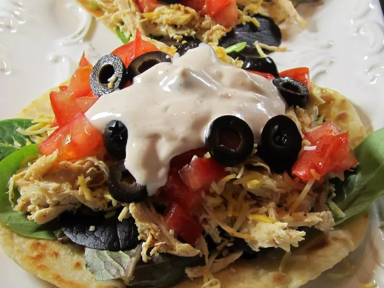

Ranch Chicken Tacos

Description
These ranch chicken tacos are a quick and easy meal that the whole family will love. They are perfect for busy weeknights or when you need to
get dinner on the table fast. The ranch seasoning adds a delicious flavor to the chicken, and the tacos are topped with all of your favorite
taco toppings. You can customize them with whatever you have on hand, making them a great way to use up leftovers. These ranch chicken tacos are
sure to become a family favorite!
Ingredients
- 1 lb boneless, skinless chicken breasts
- 1 packet ranch seasoning mix
- 1/2 cup water
- 8 small flour tortillas
- Taco toppings of your choice (shredded cheese, lettuce, tomatoes, sour cream, etc.)
Steps
- Place the chicken breasts in the slow cooker.
- In a small bowl, whisk together the ranch seasoning mix and water. Pour over the chicken.
- Cover and cook on low for 6-8 hours or on high for 3-4 hours, until the chicken is cooked through and shreds easily with a fork.
- Shred the chicken with two forks and stir to coat in the ranch seasoning mixture.
- Warm the tortillas according to package instructions.
- Assemble the tacos by filling each tortilla with a scoop of the ranch chicken and your favorite taco toppings.
- Enjoy!